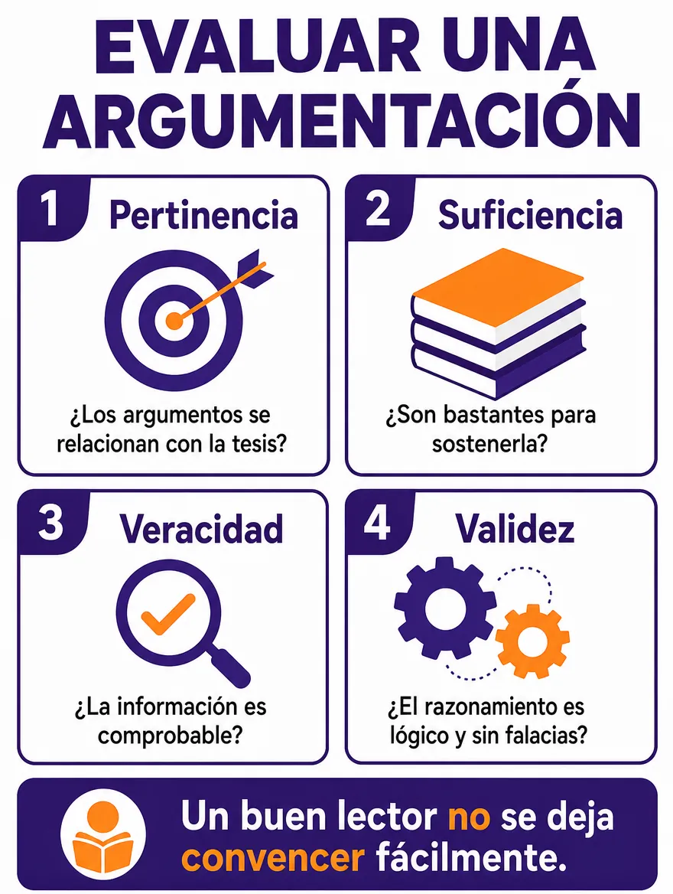

Competencia Lectora · 3.º HC
Repaso 3 · Leer argumentación
Diez contenidos para reconocer tesis, razones, falacias y recursos
12 de noviembre de 2026 · 10 contenidos · 44 preguntas
Antes de practicar · Clase con el docente
Aprende la estrategia
Leer un texto que argumenta y evaluar si convence con buenas razones
Objetivo de la clase
Repasar diez contenidos de lectura de textos argumentativos (estructura, convencer y persuadir, tipos de argumentos, razonamiento deductivo e inductivo, esquema de Toulmin, falacias, ethos, pathos y logos, léxico valorativo y figuras, argumentación dialéctica y secuencial, y evaluación de una argumentación) y aplicarlos en lecturas breves.
¿Cómo comprobaré mi avance? Podré decir cuál es la tesis de un texto, qué razones la apoyan y si esas razones son pertinentes, suficientes, verdaderas y válidas.
Instrucciones de trabajo · Antes de comenzar
Necesitas esta guía y tu cuaderno. Abre los cuatro bloques de esta pantalla en orden. Trabaja el ejemplo con el docente; después intenta la comprobación antes de desplegar su respuesta.
Luego ingresa con tu RUT. La guía tiene diez partes: en cada una primero repasas el contenido con su infografía y después lo aplicas en una lectura con cuatro o cinco preguntas. Tiempo sugerido: 90 minutos. En las preguntas 3, 8, 12, 17, 22, 27, 31, 35, 39 y 44 escribe también una respuesta breve.
Las consignas de este repaso inicial se responden en tu cuaderno: no tienen puntaje ni se guardan en línea. Las respuestas de la guía se guardan solas. Al entregar, espera la confirmación de la plataforma; los resultados dependen de la publicación del docente.
Activa lo que sabes
Piensa en la última vez que alguien intentó convencerte de algo, como cambiar de panadería o de plan para el fin de semana. ¿Qué razones te dio? ¿Te convenció por lo que dijo o por cómo lo dijo? Esa diferencia es el punto de partida de hoy.
- 1 · Comprende
- 2 · Aplica
- 3 · Observa
- 4 · Comprueba
1. Comprende los conceptos
Cuatro preguntas para evaluar un argumento

Pertinencia: ¿los argumentos se relacionan con la tesis? Suficiencia: ¿son bastantes para sostenerla? Veracidad: ¿la información se puede comprobar? Validez: ¿el razonamiento es lógico y sin falacias? Los contenidos de hoy te sirven para responderlas.
Estructura y tesis
Un texto argumentativo presenta el tema y la tesis, desarrolla argumentos y contraargumentos, y reafirma la tesis al final. La tesis es la afirmación que el autor defiende.
Convencer y persuadir
Convencer es apelar a la razón con datos y lógica. Persuadir es apelar a las emociones y los deseos. La buena argumentación combina ambos con ética.
Tipos de argumentos
Pueden ser de autoridad, de datos, de ejemplo, de causa y efecto o emotivos. Conviene elegir según la audiencia.
Modos de razonamiento
El razonamiento deductivo va de lo general a lo particular. El inductivo va de casos particulares a una conclusión general. El analógico compara dos casos semejantes.
Esquema de Toulmin
Reúne la tesis o conclusión, los datos o base, la garantía que conecta ambos, el respaldo de esa garantía, la reserva (una excepción) y el calificador modal, que indica cuán segura es la tesis.
Falacias
Son razonamientos que parecen argumentos, pero engañan: atacar a la persona, apelar a lo que cree la mayoría, tomar lo anterior como causa o presentar solo dos opciones, entre otras.
Ethos, pathos y logos
Ethos es la credibilidad de quien habla, pathos las emociones de quien escucha y logos las razones y evidencias.
Léxico valorativo y figuras
Elegir una palabra es tomar postura: no es lo mismo «valiente» que «temerario». La pregunta retórica, la metáfora, la ironía y la hipérbole también persuaden.
Argumentación dialéctica y secuencial
En la secuencial, las ideas avanzan en cadena hacia una conclusión. En la dialéctica, se confrontan tesis y contraargumentos hasta llegar a una síntesis.
2. Aplica la estrategia paso a paso
- Repasa el contenido
Mira la infografía de la parte y lee «Lo esencial». Di con tus palabras qué significa cada concepto.
- Encuentra la tesis
Antes de mirar las preguntas, busca qué defiende el autor y subráyalo en el texto.
- Separa las razones
Anota cada razón con una palabra clave: dato, autoridad, ejemplo, emoción. Revisa si el autor reconoce alguna objeción y cómo la responde.
- Vuelve al texto y decide
Ubica la frase que responde la pregunta y compara las alternativas con ella. Descarta las que nombran un recurso o una falacia que el texto no contiene.
Antes del modelo: explica con tus palabras la diferencia entre convencer y persuadir.
3. Sigue un ejemplo razonado
Ejemplo de enseñanza, no evaluado
«Probablemente el curso debería tener una sala de estudio. En una encuesta, 25 de 30 compañeros dijeron que estudian mejor en silencio. Quien estudia en silencio retiene más. Eso sí, no funcionaría si nadie la cuida».
Pregunta del modelo
¿Cuáles son la tesis, la base, la garantía y la reserva de este texto?
Pienso en voz alta
Lo que el autor defiende es la primera oración: «el curso debería tener una sala de estudio». El dato comprobable es la encuesta. La frase «Quien estudia en silencio retiene más» es el principio que une el dato con la tesis. Y la última oración admite una excepción.
Conclusión justificada
Tesis: el curso debería tener una sala de estudio. Base: 25 de 30 compañeros estudian mejor en silencio. Garantía: quien estudia en silencio retiene más. Reserva: no funcionaría si nadie la cuida. La palabra «Probablemente» es el calificador modal, porque muestra que la tesis no se presenta como segura.
4. Comprueba y prepara la práctica
Ahora explica tú · En tu cuaderno
En el mismo texto, ¿la encuesta es suficiente para sostener la tesis? Anota tu respuesta y qué dato agregarías.
Revisa después de responder
Es un buen comienzo, porque es un dato que se puede comprobar, pero es una sola encuesta en un curso de 30 personas. Se fortalecería con más evidencia, por ejemplo, las notas de quienes ya estudian en silencio o lo que ocurre en otros cursos. Si respondiste que no sirve porque es una encuesta, revisa: lo que falta es más evidencia, no descartar el dato.
Comprueba antes de avanzar
¿Puedes decir la tesis en una frase? ¿Puedes señalar la frase que une el dato con la tesis? Si falta alguno, vuelve al bloque 1 de esta pantalla.
Aplica y transfiere
En la práctica, antes de responder cada pregunta, di qué contenido pide: estructura, convencer o persuadir, tipo de argumento, razonamiento, Toulmin, falacia, ethos, pathos o logos, recurso del lenguaje, secuencia o dialéctica, o evaluación. Lo usarás en el cierre de la guía.
Guía 29 · 12 de noviembre
Repaso 3 · Leer argumentación
10 contenidos · 44 preguntas · Tiempo sugerido: 90 minutos · En cada parte, primero repasa la infografía y después aplica el contenido en la lectura
Revisión y entrega
Puedes entregar con preguntas pendientes.
Entrega confirmada
Tus respuestas quedaron registradas. Los resultados estarán disponibles cuando el profesor los publique.
Volver al portal PAES